Føler du også at det kan være
svært at bruge dine rester?
Så kan vi hjælpe dig!

Det behøver ikke at være dyrt at spise miljøvenligt. Ved at bruge dine rester sparer du nemlig selv penge i budgettet samtidig med at du undgår at belaste miljøet yderligere.
Formindsk din madspild sammen med os!

Herunder finder du inspiration til 3 forskellige slags Ramen som du kan lave med netop de rester du har til overs
Ramen 3 måder
Opskrift
Sådan gør du
- Steg grøntsagerne/tofu på en pande
- Tilsæt 1 liter vand til en gryde og kom boullion (evt. miso) i og lad derefter suppen koge op - smag til med soya og lidt sesamolie (tilføj evt. andre krydderier her)
- Tilsæt nudler af eget valg og lad dem koge med (se på pakken efter tid)
- Kog et æg i en gryde i 7-8 minutter, så det bliver let smilende
- Hak forårsløg, koriander og svampe og gem dem til topping
- Steg evt. lidt kylling eller edamamme bønner til yderligere topping
- Fordel nu suppen med nudler i en skål og pynt med den ønskede topping og grøntsager
! ændre selv i ingredienserne alt efter hvilke rester du har i køleskabet